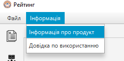

ДОВІДКА ПО РОБОТІ З ПРОГРАМОЮ
Відповіді на питання щодо використання програмиГоловний інтерфейс програми
Головний інтерфейс програми показано на рисунку О.2.
Рисунок О.2 - Головний інтерфейс програми
Імпорт .xslx файлу
Для роботи з файлом Excel, нам потрібно натиснути на кнопку “Файл” (Рисунок О.3) та “Відкрити .xlsx документ” (Рисунок О.4) після чого нам потрібно вказати шлях до нашого файлу (Рисунок О.5)
Рисунок О.3 - Кнопка “файл”
Рисунок О.4 - Кнопка “Відкрити .xlsx документ”
Рисунок О.5 - Вказуємо шлях до файлу
Відкриття таблиць
Після додавання документу до програми нам треба додати потрібні нам excel листи з якими ми будемо працювати (Рисунок О.6). Листи додаються подвійним кліком, відкриті excel листи в документі з’являються у вкладках зверху, між цими листками ми можемо перемикатись (Рисунок О.7)
Рисунок О.6 - Excel листи
Рисунок О.7 - Вкладки excel листів
Інформація про продукт
Щоб отримати інформацію про продукт потрібно натиснути на кнопку “Інформація” (рисунок О.17). На рисунку О.18 зображено інформацію про продукт. Також в меню “Інформацію” можна отримати довідку по використанню (рисунок О.19).
Рисунок О.17 - Меню “Інформація”
Рисунок О.18 - Інформація про продукт
Панель інструментів
Кнопка “Зберегти зміни”
Використовується для зберігання будь-яких змін, які користувач вніс до документу (Рисунок О.8)
Рисунок О.8 - Кнопка збереження змін у документі
Кнопка “Сортувати таблицю”
Використовується для сортування списків бюджетників згідно консолідованого балу.(Рисунок О.9)
Рисунок О.9 - Кнопка “Сортувати таблицю”
Кнопка “Додати рядок в кінець таблиці”
Використовується для того, щоб додати нових студентів до рейтингу в кінець таблиці, після додавання інформації треба натиснути на клавішу “Enter” для зберігання.(Рисунок О.10)
Рисунок О.10 - Кнопка“Додати рядок в кінець таблиці”
Кнопка “Експортувати в pdf”
Використовується для того, щоб експортувати лист рейтингу в якому користувач знаходиться в окремий файл формату .pdf (Рисунок О.11). Для цього користувачу треба вказати шлях куди він хоче його зберегти (Рисунок О.12).
Рисунок О.11 - Кнопка “Експортувати в .pdf”
Рисунок О.11 - Шлях зберігання файлу .pdf
Кнопка “Зберегти таблицю .xlsx”
Використовується для того, щоб зберегти лист рейтингу в якому користувач знаходиться в окремий файл формату .xlsx (Рисунок О.12) для цього користувачу треба вказати шлях куди він хоче його зберегти (Рисунок О.13)
Рисунок О.12 - Кнопка “Зберегти таблицю .xlsx”
Рисунок О.13 - Шлях зберігання файлу .xlsx
Кнопка “Змінити тему”
Використовується для того, щоб змінити інтерфейс програми на чорну тему(Рисунок О.14), або ж навпаки на білу тему.(Рисунок О.15)
Рисунок О.14 - Кнопка “Змінити тему на білий колір”
Рисунок О.15 - Кнопка “Змінити тему на темний колір”
Робота з рядками таблиці
Контекстне меню (видалення рядку, встановлення соц. стипендії)
Щоб видалити рядок з таблиці потрібно натиснути на нього правою кнопкою миші і обрати в контекстному меню “видалити рядок”. Також можна обрати пункт “соціальна стипендія” щоб відмітити студента. На рисунку О.16 зображено контекстне меню
Рисунок О.16 - Меню з видаленням рядка та можливістю поставити мітку для студентів із соціальною стипендією
Панель списку документів
Контекстне меню таблиць документу (відкриття, видалення, зміна назви, ексопрт)
Можна обрати будь-який лист, клікнути на нього правою кнопкою миші та отримати змогу виконати такі дії: видалити таблицю, відкрити таблицю, змінити назву, зберегти в .xlsx або в .pdf. Все це зображено на рисунку О.20.
Рисунок О.20 - Меню роботи з листами документу
Контекстне меню документів (формування рейтингу з двух таблиць, видалення, зміна назви)
На цій панелі також можна оперувати з самим документом. Правою кнопкою миші тиснемо на назву документу. У меню що з’явилося можемо сформувати рейтинг (використання аналогічне до формування рейтингу інструментом), змінити назву та видалити документ.
Рисунок О.21 - Меню роботи з документом